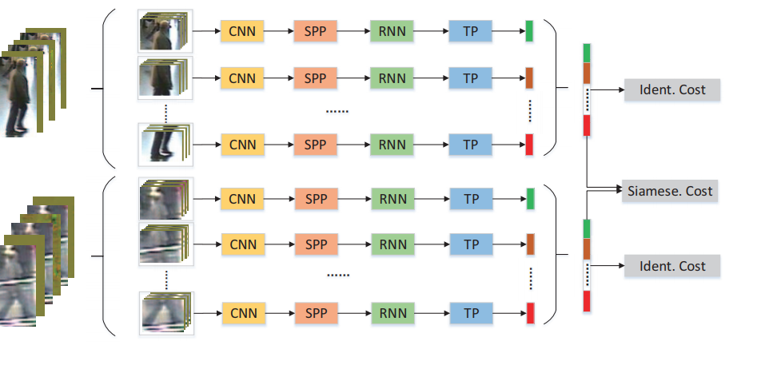

Xiang Xu 徐翔 PhD Student |
Aboute Me
|
I am a first year PhD student (2019-) at the School of Computing Science, Simon Fraser University. I am co-advised by Prof. Manolis Savva and Prof. Greg Mori. Previsouly, I obtained my B.S. in Electrical and Computer Engineering from Carnegie Mellon University, where I was advised by Prof. Kris Kitani.
My research interests lie at the intersection of computer vision, machine learning, and computer graphics. |
Recent News
- May 2020: Research intern at FAIR, from May 2020 - Sep 2020
- Jan 2019: Research intern at Baidu, from Jan 2019 - Mar 2019
- July 2018: One paper on image hashing accepted to BMVC 2018!
Selected Publications
 |
Error Correction Maximization for Deep Image Hashing Xiang Xu, Xiaofang Wang, Kris M. Kitani British Machine Vision Conference (BMVC), 2018 [PDF] |
 |
A Spatial and Temporal Features Mixture Model with Body Parts for Video-based Person Re-Identification Jie Liu, Cheng Sun, Xiang Xu, Baomin Xu, Shuangyuan Yu Applied Intelligence , 2018 [PDF] |
|
A Link Prediction Algorithm Based on Label Propagation Jie Liu, Baomin Xu, Xiang Xu, Tinglin Xin. Journal of Computational Science , 2016 [PDF] |